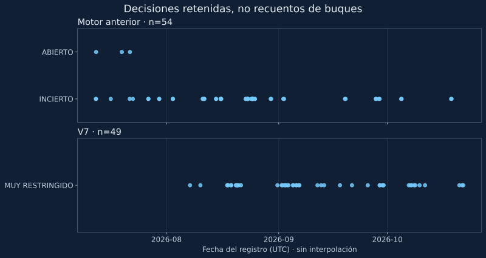

El archivo conserva 54 decisiones del motor anterior y 49 del V7. Compararlas revela cómo cambió la forma de describir la incertidumbre, pero no permite reconstruir el número de buques que atravesó Ormuz.
La pregunta útil para leer un historial no es solo cuántas veces aparece «abierto». Antes hay que saber qué produce una fila. En este proyecto, los registros retenidos contienen publicaciones del monitor, con su fecha, etiqueta y confianza. No son un censo continuo de navegación ni una serie de observaciones tomada a intervalos regulares.

Dos motores, dos preguntas
El archivo anterior contiene 54 registros entre el 12 de julio y el 18 de octubre de 2026: 51 con la etiqueta INCIERTO y tres con ABIERTO. El archivo V7 conserva 49 entre el 7 de agosto y el 21 de octubre: todos figuran como OPEN_SEVERELY_RESTRICTED, «abierto con tránsito muy restringido». Este recuento describe las etiquetas guardadas. No confirma que el diagnóstico marítimo de cada fila fuera correcto.
Sería un error dibujar una línea que pase de las tres aperturas antiguas a los 49 registros V7 y presentarla como una recuperación del tráfico. Las definiciones son distintas. Una etiqueta anterior que no lograba confirmar apertura o cierre no equivale a la categoría V7, que separa paso, intensidad, acceso y riesgo. La diferencia entre archivos puede proceder del método, de la evidencia disponible o de ambos.
Una comparación con ventanas de la misma duración
Para evitar comparar un mes completo con un mes parcial, seleccionamos dos ventanas consecutivas de 21 días, en UTC. El límite final se sitúa después del último día conservado por V7, no en la fecha de consulta de la web.
| Ventana inclusiva | Registros | Días con registro | Etiqueta / confianza |
|---|---|---|---|
| 10–30 septiembre de 2026 | 11 | 8 de 21 | Muy restringido / media, en todos |
| 1–21 octubre de 2026 | 10 | 7 de 21 | Muy restringido / media, en todos |
Hay una publicación retenida menos en la segunda ventana. No hay base para traducir esa diferencia a menos barcos, mayor estabilidad o menor riesgo. Tampoco los 13 y 14 días sin una fila retenida acreditan una interrupción del servicio: el archivo no es un registro íntegro de todas las ejecuciones.
El dato que falta importa tanto como el que aparece
Ninguno de los 49 registros V7 contiene un porcentaje numérico de tráfico ni una instantánea de recuento marítimo en los campos examinados. Por tanto, este conjunto no permite calcular una caída porcentual del tránsito. Las palabras «muy restringido» pertenecen a la salida del modelo; este análisis no las convierte en mediciones AIS.
La fecha más reciente del historial, 21 de octubre, tampoco debe sustituirse por la hora de la portada del 24 de octubre. Una consulta posterior del sistema no renueva retrospectivamente la fecha de las observaciones conservadas.
Cómo reproducir y mejorar el análisis
El CSV usado conserva modelo, fecha, estado, confianza y disponibilidad de los dos campos de tráfico. El resumen de cálculo contiene los límites exactos de las ventanas y las huellas de los archivos de origen. Se ordenan las fechas, se separan los modelos y se cuentan únicamente las filas dentro de cada intervalo; el límite final se excluye.
Para evaluar aciertos haría falta una referencia externa fechada y comparable para cada decisión. Para estudiar duración haría falta conocer todas las ejecuciones y una regla justificada sobre cuánto tiempo representa una observación. Son trabajos distintos del recuento de filas que aquí sí puede reproducirse. Mantener esa separación es la principal aportación de este borrador.
Datos de origen: Archivo del motor anterior · Archivo V7.